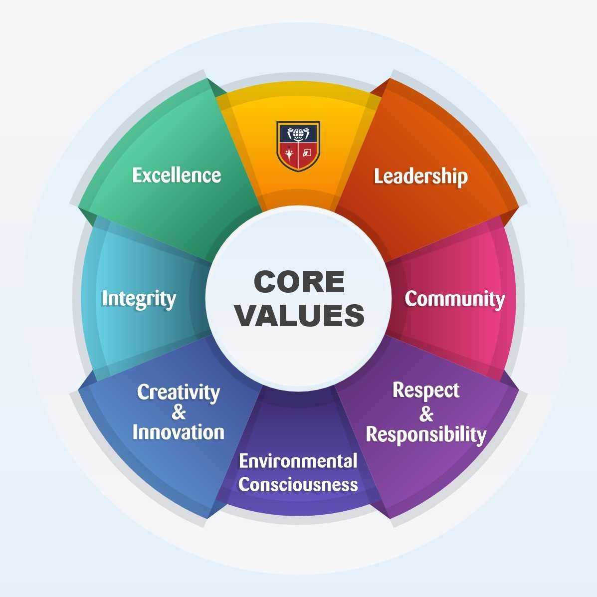

Our Mission
Deliver quality education that combines academic excellence, discipline, and practical skills so students can succeed with confidence in Nepal and beyond.
About Us
Every decision we take is guided by purpose, integrity, and service to students.
Read MoreDeliver quality education that combines academic excellence, discipline, and practical skills so students can succeed with confidence in Nepal and beyond.
Become a leading community school that produces responsible, innovative, and employable graduates through modern, inclusive, and technology-rich education.
We deliver a balanced learning model built for academic success and life readiness.

Core Pillars
We model honesty and accountability in every class and decision.
Every learner and teacher is valued and heard.
We push for continuous improvement in academics and character.
Our Vision


Let’s build confident, future-ready students together.
The mission of Kankai Secondary School is to provide quality education that builds strong character, practical skills, and a lifelong love of learning. We are committed to teaching every student with care and discipline, regardless of background. Our classrooms emphasize respect, responsibility, and steady progress. We believe that education should shape both knowledge and values.
Our vision is to become a leading community school in Ilam that prepares students for higher education, modern careers, and responsible citizenship. We want our graduates to be confident, skilled, and able to contribute positively to society. This vision guides our daily decisions, from teaching practices to campus improvement. We aim to be recognized for both academic excellence and moral strength.
To achieve our mission, we focus on strong foundations in language, mathematics, science, and digital literacy. Students are guided to think critically, solve problems, and communicate clearly. Learning is connected to real life so students understand the purpose behind their studies. Practical activities and projects help them apply knowledge effectively.
We also value balanced development. Sports, ECA, and creative activities are part of our program because they build teamwork, confidence, and leadership. Students learn to respect rules, manage time, and work with others. These experiences support mental and physical wellbeing alongside academic growth.
Modern learning spaces are important for our vision. The library, science lab, computer lab, and electronics lab give students opportunities to explore and practice. Our Computer Engineering program for grades 9 to 12 is a key example of our commitment to skill based learning. These facilities help students prepare for future challenges.
Partnership with parents and the community is another core principle. We believe students learn best when home and school work together. We encourage open communication, regular meetings, and shared responsibility for student progress. Community involvement keeps the school grounded and responsive to local needs.
Our values guide us in every situation: integrity, respect, diligence, and service. Teachers model these values daily and encourage students to practice them in school and beyond. We celebrate effort and improvement, not just results. This creates a positive culture where every child feels valued.
The mission and vision of Kankai Secondary School are not only statements but daily actions. We continue to improve teaching quality, learning resources, and student support. With dedication from staff, students, and families, we move steadily toward our goals. This is our promise to the community we serve.